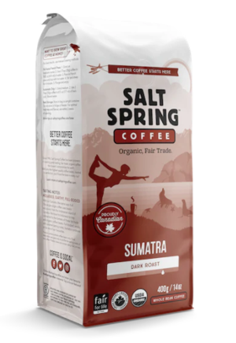

Bright Roast
Tastes of bright raspberry notes on entry, sweet almond
impressions, ruby red grapefruit, juicy mouthfeel and
a crisp finish, all from Honduras, Ethiopia, and Uganda.
Dark and Strong
Bold, rich, intense, a classic! With crisp, round citrus,
dark chocolate, “coffee”, sweet spice. It is 100% Certified
Organic, Single Origin Colombian Arabica Beans.
DeCaf
Sugar-sweet, dried fruit, semi-sweet chocolate,
baking spice, made from 100% Single Origin
Honduran Arabica Beans.
Congo Medium and Vibrant
Sweetly aromatic, juicy citrus, smooth milk chocolate,
and exotic spice, all from 100% Single Origin DRC
Arabica Beans.

DeCaf Espresso #9
A smooth and full-bodied shot, rich and
creamy with notes of dark chocolate and
hints of spice.

Cowboy Blend
Spicy, roasty, and smoky. Roasted to a level
of darkness which brings out a full-bodied
sweetness without obsuring the complex
combination of flavors in the cup.

Frenchy French
A carefully selected coffee, usually from
South America, that can withstand the high
temperatures of the roast profile which
takes it to that nice dark level.

Get Lit
An amazing medium-dark roast blend that's perfect for
curling up with your favorite novel!
Canopy Bird, Medium Roast
Features beans from Latin America and
Ethiopia to create a rich, smooth coffee
with dark, earthy tones. Good to drink—and
good for the birds.
Metta Espresso, Medium Roast
Originating from Latin America and Sumatra,
its smooth dark chocolate and caramel notes
and light cherry finish, our Metta Espresso
stands on its own, stands up to steamed milk
and stands out in a crowd.

Sumtra, Dark Roast
Sumatra has a strong full body and smoky-
earthy-syrupy flavours. We travel to
Indonesia to stay connected to the source
of organic beans.
Peru
Our Peru is our lightest roast, making it
a natural starting point to begin exploring
our Classic coffee line-up. Expect a sweet,
nutty coffee with bright citrus and floral
notes.

Organic Assam Black Tea
This mellow and malty Assam black tea
celebrates the unique flavor characteristics
of the Assam tea-growing region. Add milk to
enhance your experience!
Organic Black Tea with Ginger
This flavorful blend of black tea and ginger offers
a naturally sweet and warming cup with the perfect
touch of spice.
Organic Chai
This lively brew is infused with a blend of
organic spices. Add milk and sugar in the traditional
manner, or try it on its own.
Organic Chamomile
Calming chamomile quiets the mind and
soothes the spirit. Find your inner peace
with this mild, floral tea. Caffeine-Free.
Green Tea
Active Whole Leaf Ingredients: Organic Green
Tea & Hawaii Grown Green Tea.
Earl Grey
Active Whole Leaf Ingredients: Hawaii
Grown Black Tea, Organic Black Tea &
Essential Bergamot Oil.
Spicy Chai
Active Whole Leaf Ingredients: Organic
Black Tea, Hawaii Grown Black Tea, Organic
Cinnamon, Organic Cardamom, Organic Ginger
Root, Organic Black Pepper & Organic Clove.
Wild Hibiscus
Active Whole Leaf Ingredients: Organic White Tea,
Hawaii Grown White Tea, Organic Hibiscus Flowers
& Organic Rooibos.
Black Tea, Black Snail
Named for the twisted shape of the finished
leaves - fancifully reminiscent of snail
shells, this is a lighter, sweet black tea
with hints of roses and plums - perfect
for afternoon tea times.
Black Tea, Golden Monkey
Features include the use of only the tea
bud and first leaf, full oxidation, with
the resultant golden tips that provide
much of the tea’s color and distinctive
flavor profiles.
Oragnic, Green Eyebrow
A distinctive tea with more bite than
some green teas, and is named for the
characteristic shape of its leaves,
produces a brew light in color with a
fresh, sharp taste.
Oragnic, Green Mao Jian
One of the most delicate green teas we have
seen. Steeped normally, it produces a lovely
pale green brew with meadow notes and light
forest scents.
Bialetti - Moka Express
Designed and made in Italy, this moka pot
features the classic Bialetti octagon shape
and triple-chamber design to prepare rich,
velvety espresso on the stovetop.
Mueller French Press
More thicker, More heavier, Build to last –
Our huge capacity professional grade 304
18/10 double-layered stainless-steel
baby will keep your coffee hot for 60
minutes longer than thinner steel and
glass models.
Presto 6-Cup
500-watt classic stainless-steel percolator
brews from 2 to 6 cups of coffee.
Bunn
Brews a full pot of Coffee in less
than half the time of other top-selling
home Coffee makers.
Ninja Hot and Cold Brewed System
offers a vast array of coffee and tea options,
including smooth, naturally sweet cold brew
in as little as 10 minutes and frothy chai
lattes and cappuccinos.
Wilbur Curtis Commercial
Intuitive Scroll-Through Precision Programming –
Large, Brightly Lighted Display Communicates
Functions At A Glance. Easily Adjust Time, Volume,
Temperature, Brew Functions And More.
Breville - The Oracle
Automatic grinding, dosing, tamping and milk texturing,
automating the two most difficult parts of manual espresso.
You can extract espresso and texture milk simultaneously,
enabling you to go from beans to latte in under a minute
simultaneously.
De_Longhi La Specialista Espresso
The La Specialista Maestro brings into harmony the
science of coffee beans and the art of brewing
espresso the right way, much like a master conductor
leading an orchestra.